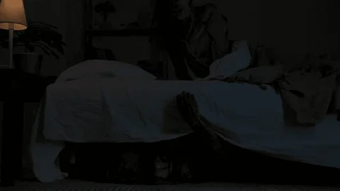
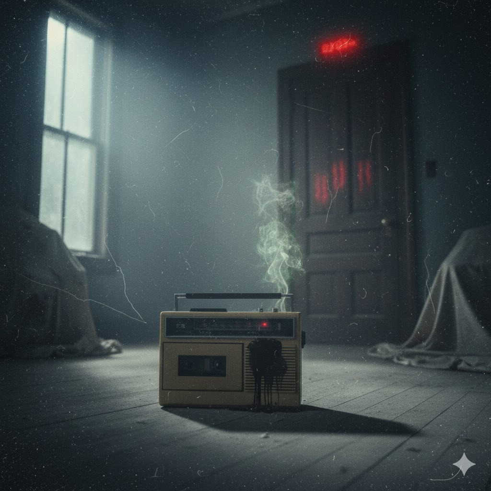

BASADAS EN HECHOS REALES
Explora los relatos reales más perturbadores enviados por nuestros lectores...

Lo que se Arrastraba Bajo Mi Cama
Un lector recuerda algo que lo persiguió desde la infancia… y que nunca dejó su habitación.
[Leer Más]
La Voz en la Grabadora
Un audio antiguo advertía algo imposible… hasta que se repitió en la vida real.
[Leer Más]
El Hombre del Subterráneo
Un trabajador de túneles describe algo que vio en la oscuridad más profunda.
[Leer Más]